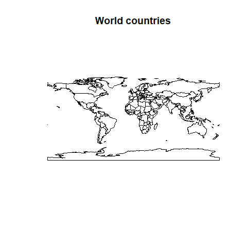
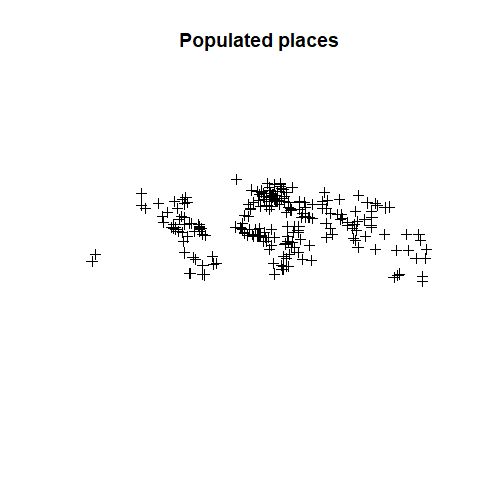
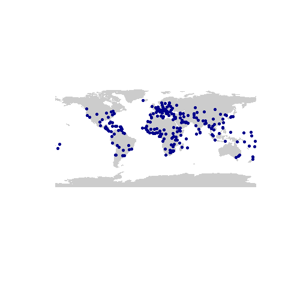
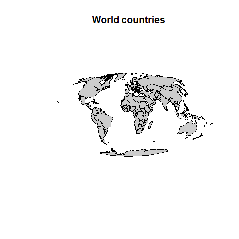
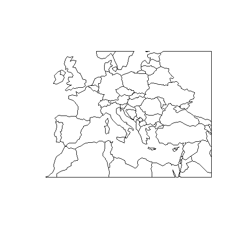
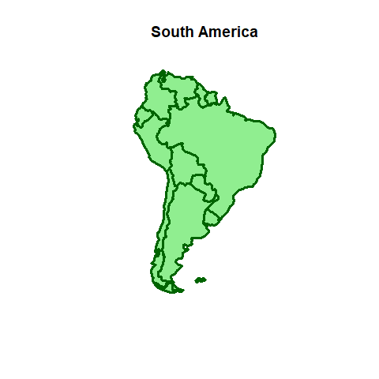
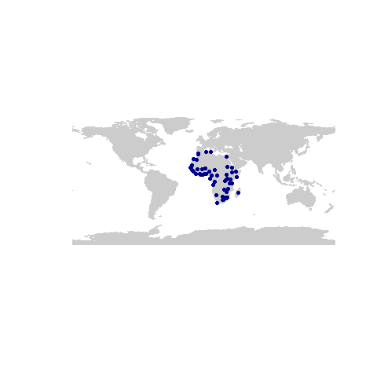

2 Vector: Hello, world!
This chapter will introduce you to some of the key concepts surrounding the use of vector spatial data in R. You will learn the basics of how to import and manipulate vector data.
2.1 Importing vector data
2.1.1 Spatial data formats
The Geospatial Data Abstraction Library (GDAL) is a translator library for raster and vector geospatial data formats. It underpins most GIS software (both proprietary and open-source). We will start by loading the R package of this library and check all the vector data formats that can be imported into R.
## name long_name write copy isVector
## 1 AeronavFAA Aeronav FAA FALSE FALSE TRUE
## 2 AmigoCloud AmigoCloud TRUE FALSE TRUE
## 3 ARCGEN Arc/Info Generate FALSE FALSE TRUE
## 4 AVCBin Arc/Info Binary Coverage FALSE FALSE TRUE
## 5 AVCE00 Arc/Info E00 (ASCII) Coverage FALSE FALSE TRUE
## 6 BNA Atlas BNA TRUE FALSE TRUEHere, vector_formats is a data frame containing names and information of various formats supported by GDAL. You can explore vector_formats. How many different formats are available? Are you familiar with any of them?
2.1.2 Import vector data: Shapefile
Shapefile is a popular format used in GIS. Typically shapefiles consist of four (and sometimes more) files. These have the following extensions: .shp, .shx, .dbf, and .prj. You are likely to encounter shapefiles a lot, especially if working with 3rd party data (e.g. point location data from an NGO).
We will import a polygon layer of the world countries extracted from Natural Earth Data. This data should be available in your data folder:
countries <- readOGR(dsn = "data/ne/ne_110m_admin_0_countries", layer = "ne_110m_admin_0_countries")## OGR data source with driver: ESRI Shapefile
## Source: "C:\Git\spatial_data_analysis\data\ne\ne_110m_admin_0_countries", layer: "ne_110m_admin_0_countries"
## with 177 features
## It has 94 fields
## Integer64 fields read as strings: POP_EST NE_IDOGR is the vector part of the GDAL library. For future reference, any functions with OGR in its name will mostly likely be used to read, write or manipulate vector data.
It is also worth noting that the syntax used within readOGR can vary depending on the vector format being read. If you have trouble reading in other types vector data, you will likely be able to find examples online.
Lets make our first plot using base R graphics:

We can check the class and spatial attributes of this layer:
## [1] "SpatialPolygonsDataFrame"
## attr(,"package")
## [1] "sp"We can see that this data is a SpatialPolygonsDataFrame. Within this object, there are multiple pieces of information stored in slots. Slots can be accesed with the @ symbol. Lets see what is contained within the slots of countries:
2.1.3 Import vector data: Geopackage
Despite the popularity of Shapefiles, we (well, mainly James) strongly encourage you to adopt the Geopackage format. One huge benefit of the .gpkg file type is that all data is stored in a single file, as opposed to the 4+ found in shapefiles.
We will import a modified version of the “Populated places of the world” dataset, also from from Natural Earth Data:
## OGR data source with driver: GPKG
## Source: "C:\Git\spatial_data_analysis\data\ne\ne_110m_populated_places_simple.gpkg", layer: "places"
## with 243 features
## It has 38 fields## [1] "SpatialPointsDataFrame"
## attr(,"package")
## [1] "sp"
As you can see, the class of this data is a SpatialPointsDataFrame. It has similar properties to the SpatialPolygonsDataFrame seen with the countries object, except, that each feature is represented by a single point, rather than group of points making a polygon.
The plot of points is not very informative on its own. Let’s combine with the world map:
plot(countries, col = "grey80", border = "grey80")
plot(places, pch = 20, col = "darkblue", add = TRUE)
This plot demonstrates the key role that layering plays in GIS and spatial data visualisation. Some maps will contain many layers of information stacked on top of one another, each representing a different feature or set of features.
2.2 Coordinate Reference Systems (CRS)
You can check the CRS of your spatial object. This is stored as a character string:
## [1] "+proj=longlat +datum=WGS84 +no_defs +ellps=WGS84 +towgs84=0,0,0"Sometimes, you may wish to reproject your data, either for visualisation or analysis purposes. In this case, we transform to the Mollweide projection. This is an accurate single global projection that preserves geographic area. You can see an example of application in March et al. 2019:
countries_moll <- spTransform(countries, CRS("+proj=moll +ellps=WGS84"))
plot(countries_moll, col = "grey80", main = "World countries")
2.3 Geographic subset
Subsetting data is a useful way to select data only relevant to you. This can be done spatially, i.e. selecting data that falls within an area of interest, or by attributes. The latter utilises the attirubte table to filter the data, returning spatial objects that match the desired profile.
2.3.1 Geographic subset by setting a bounding box
First, create a bounding area for subsetting the data:
library(raster)
# Set min and maximum coordinates (lon/lat)
xmin <- -15
xmax <- 46
ymin <- 28
ymax <- 60
# Create an extent object
e <- extent(xmin, xmax, ymin, ymax)
class(e)## [1] "Extent"
## attr(,"package")
## [1] "raster"Then, you can use the extent object to subset the world map using the crop function (from the raster package, but also works on vector data):

- Make a plot of South America
- Tip: you can use QGIS or Google Earth to search for coordinates to use in your extent object.
2.3.2 Geographic subset by data attributes
As we discovered earlier, the linked attribute table is stored in the data slot. In this case, the table contains specific information for each country. You can explore convert the data object from countries into a data.frame and then explore the attribute data more easily:
List of continents:
## [1] Oceania Africa North America
## [4] Asia South America Europe
## [7] Seven seas (open ocean) Antarctica
## 8 Levels: Africa Antarctica Asia Europe North America ... South AmericaSubset countries from South America:
south_america <- countries[countries$CONTINENT == "South America",]
plot(south_america, col = "lightgreen", border = "darkgreen", lwd=3, main = "South America")
## class : Extent
## xmin : -81.41094
## xmax : -34.72999
## ymin : -55.61183
## ymax : 12.43732.4 Spatial overlap
Determining the overlap between spatial layers in order to extract information from one to another is one of the most common tasks in GIS.
Here, we want to plot the populated places, but only in Africa. However, there is no information about the continent in the places layer We will use a spatial overlay to extract information from the countries layer using the over function:
## [1] "data.frame"This operation returns a data.frame containing the same number of features as places, but with the spatially matching attributes from countries. We then can append the continent information to the attribute table of the places point layer:
Note that there are features with NA in the CONTINENT attribute. This is due to a spatial missmatch between layers in terms of resolution, more specifically because of the coarse resolution of the countries layer. There are several alternatives: 1) use a high-res countries map, 2) calculate the nearest polygon.
places_africa <- places[which(places$CONTINENT == "Africa"),]
plot(countries, col = "grey80", border = "grey80")
plot(places_africa, pch = 20, col = "darkblue", add = TRUE)
2.5 Interactive maps
Spatial datasets can sometimes require an interactive visualization of the data. In R, we can use the leaflet library to generate a dynamic viewer:
# import leaflet package
library(leaflet)
# create leaftet map
map <- leaflet(data = places) %>%
addProviderTiles("Esri.OceanBasemap") %>% # Base map
addMarkers(popup = ~name)
# plot leaflet map
mapYou can customize your map using different basemaps, add more spatial layers and much more. You can check the official package website for many examples.